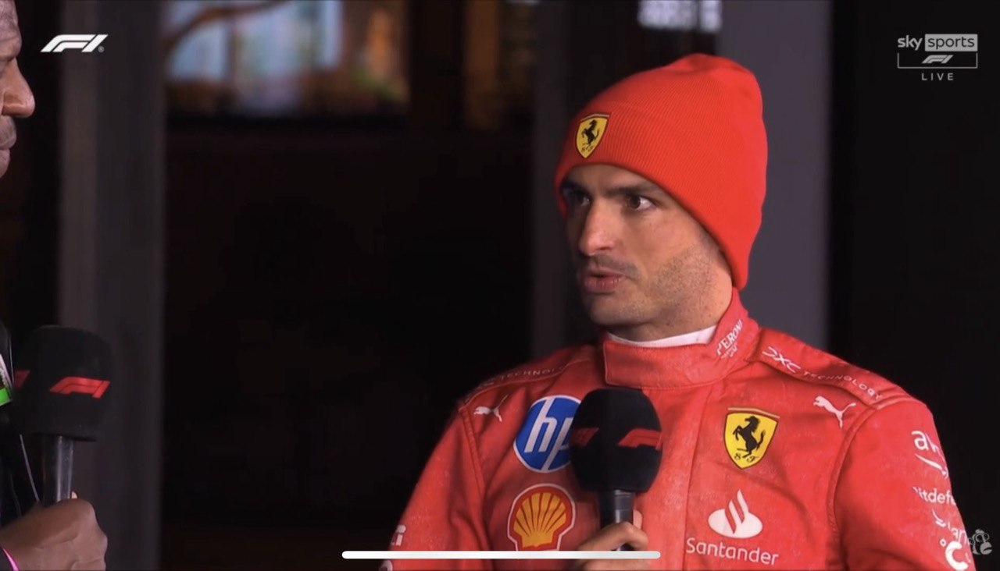
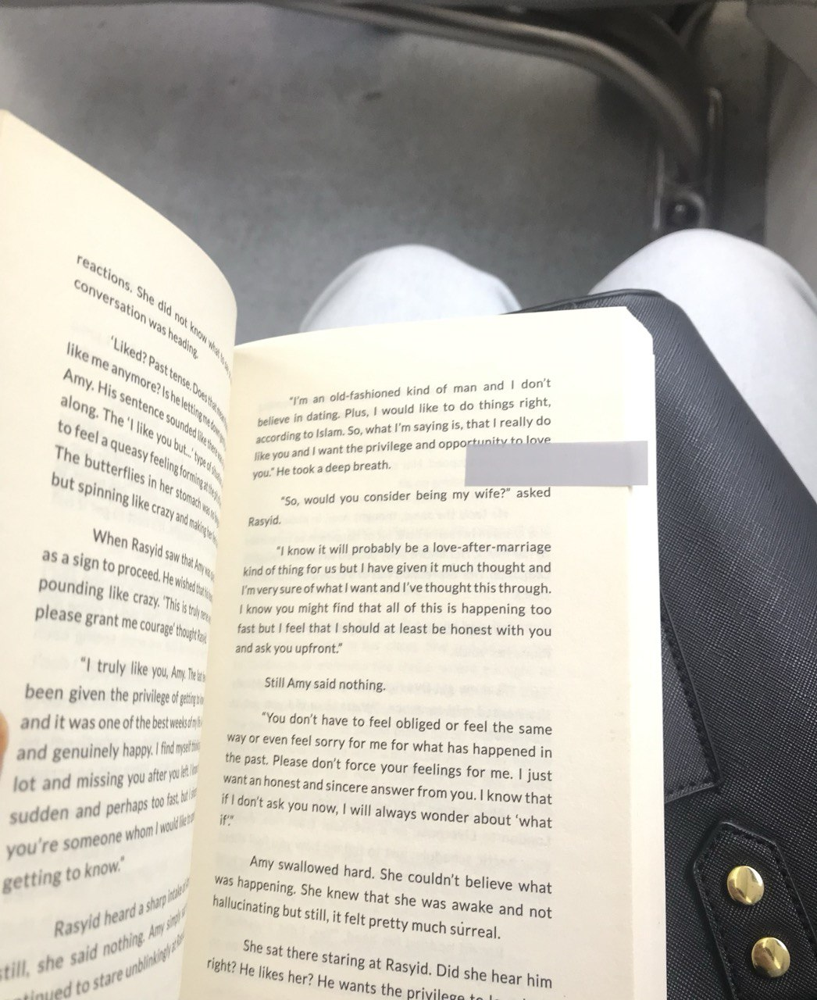

Formula One is a global phenomenon loved for its high-speed thrills, cutting-edge technology, and intense rivalries. It combines the excitement of drivers pushing limits at over 200 mph with unpredictable races where strategy, weather, and precision engineering can change outcomes in seconds.
I've started to like f1 was actually back in July 2023 after watching it together with my cousins. It was such mix of adrenaline pumping action, incredible driver skills, and cutting-edge technology. The sport’s drama, glamorous and diverse personalities make it exciting and relatable.
Check out more about Formula One.
Books provide a safe space to connect with relatable characters, dream of adventures, and experience stories that inspire or comfort.
I've been reading since I was six, and it's always nurtured my creativity and imagination. It's not just about the stories but the calm and growth that comes with it.
Girls enjoy reading because it offers a peaceful escape and a way to explore different worlds and emotions.
During a time of self-discovery, music becomes a powerful outlet for feelings, whether it's joy, sadness, or excitement. Singing also lets me explore creativity and individuality while having fun.
Achievements & Performances
Types of Performances:
Click the icon to see my favorite songs!